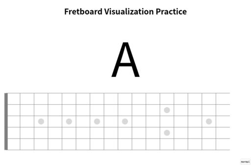
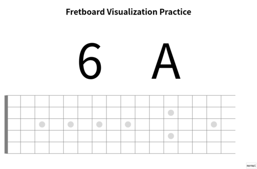

渡辺香津美さんの Guitar Dozo の影響で再びギターを手に取ることにした。
香津美さんの Guitar Dozo の第 1 回で 20 年以上に渡ってわからなかった Shang-High の和音を知りたいと質問したのだけど、それに答えてもらったことがギター再開のきっかけになった。
わかってしまった以上、Shang-High を弾きたくなるでしょ、やっぱり。
最近の日記でギターやギター関連の備品の購入についてやたら触れているのはそういうことなのだった。
そんなわけで当面の目標は２つ。
Thad Jones の A Child is Born が弾けるようになることが目標になっているのは、まず曲が美しくて素晴らしいし、弾けるようになったら娘に贈りたいからだったりする。
標題のとおりなのだけど、指板上の音を丸暗記するための Web サイトを作った。
なんでこんなサイトを作ったのかと言うと理由はいくつかある。
ジャズを弾けるように練習を始めたことはすでに述べた。
それで YouTube なんかでジャズ・ギターの教則動画を見ると、ジャズ・ギターの講師をやってる誰もが軒並み指板上の音を覚えないと何も始まらないと言っている。
例えばジャズギタリストの宇田さん。
それで指板を丸暗記するためのコツとかないかと、いろいろ調べた。紙にフレットを書いて 1 フレットづつ丸暗記する方法、CAGED システムを利用する方法、ペンタトニック・スケールを利用する方法、その他色々あった。なかでも効果がありそうなリー・リトナー・メソッドというのがあって、しばらくそれを続けていた。
でも続けるうちに、この方法だとロックを演奏してる人間がよく陥りがちな「型」で覚えてしまうことに気がついてしまった。
「型」で覚えてしまうことの最大にして最悪のデメリットは、音の記憶を「始点」からの「型」、言い換えれば相対的な位置で覚えてしまい、本来覚えるべき音を直接に指板上にマッピングすることができないってことだ。
リー・リトナー・メソッドはなかなかスパルタンでキツイメソッドではあるけれど、もっと直接的に指板にアプローチするやはりスパルタンな方法を説明している動画を見つけた。なぜか動画を貼れないのでリンクを貼っておく。
動画の中で紹介されているアプリだが、Android 版が 2200 円もする。指板上の音を覚えるためだけに 2200 円を払いたくはない。
また TRPG 用の 6 面体と 12 面体のサイコロを使って指板上の音を記憶する方法も考えた。しかしそれだと指板上の位置から音を導き出すという流れになってしまい、演奏に必要なこの弦でこの音を出すにはここを押さえる、という実際の思考の流れと逆になる。
それよりも Web に弦と音名をランダムに表示して、それが指板上のどこにあるのかを指し示すようにしたほうが、より直接的に指板にアプローチできると考えた。
そうやってできたのが Fretboard Visualization Practice というサイトだ。
この日記を書いている時点でプラクティスは 2 つある。
Practice 01 では、ユーザはどの弦の音を丸暗記するのか予め決めておく。音名をクリック、スマホのブラウザであればタップすればランダンダムに音名が表示される。ユーザはその音がどのフレットにあるかを瞬時に選ぶ。
正解不正解は一切表示しない。
それはなぜかというと、答え合わせを表示してしまうと、人は何も覚えていないのにわかったような気になってしまうからだ。最初のうちは合ってるかほんの僅かでも疑問があればフレットを数えて確認してもまったくよい。いやむしろ積極的に確認すべきだ。練習を繰り返すうちに確認作業は不要になる。
一定時間で次々に表示される音名を切り替えるようなギミックは、現時点では組み込んでいない。
それはなぜかというと、時間に追われて時間との競争をするゲームになってしまったら本来の目的である指板上の音を覚えるということがおろそかになるからだ。時間との競争が有益な状態を発見できれば実装する可能性はある。
Practice 02 では、システムは弦の番号と音名をランダムに表示する。もちろん Practice 01 と同様に弦の番号や音名のあたりをクリック、スマホのブラウザであればタップすればよい。ユーザはその音をどの弦のどのフレットにあるかを瞬時に選ぶ。
正解不正解を一切表示しないのも、タイムトライアルが実装されていないのも Practice 01 と同様である。
なおこの Web システム ( システムと呼べるほど大げさなものではないが ) は現時点で HTML ファイル単体で動作する。今の所外部の CSS ファイルや JavaScript ファイル、画像ファイルは一切使っていない。
なので HTML ファイルを保存してしまえばネットにつながっていない状態でも動作する。
また動作確認は Ubuntu MATE 上の Firefox、Google Chrome、Google Pixel 7 上の Firefox、Google Chrome で確認している。Web 標準の関数しか使っていないため Safari などでも動作するはずだ。
寝る前に 5 分間とか通勤電車の中とかのちょっとしたスキマ時間で使うこともできる。なにしろギターがなくてもメソッドを行うことができる。
あなたのギターライフの助けになれば幸いだ。まぁ自分のために作ったのだけど。